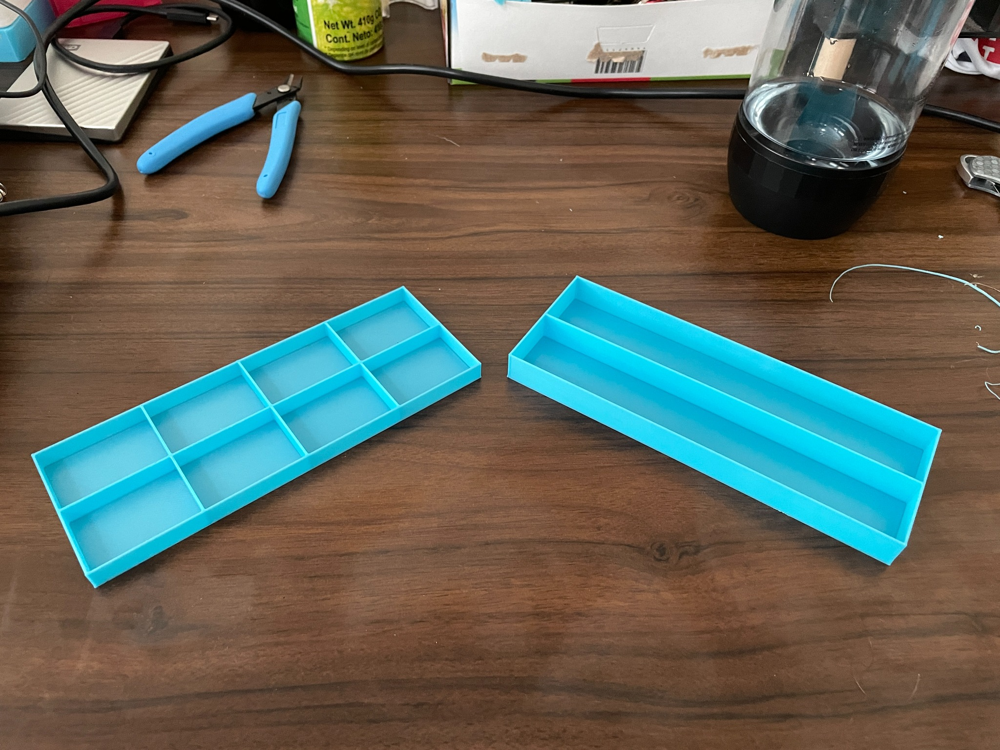
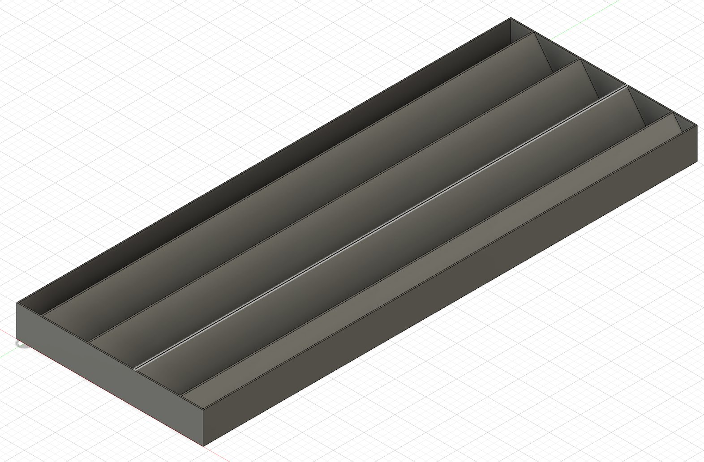
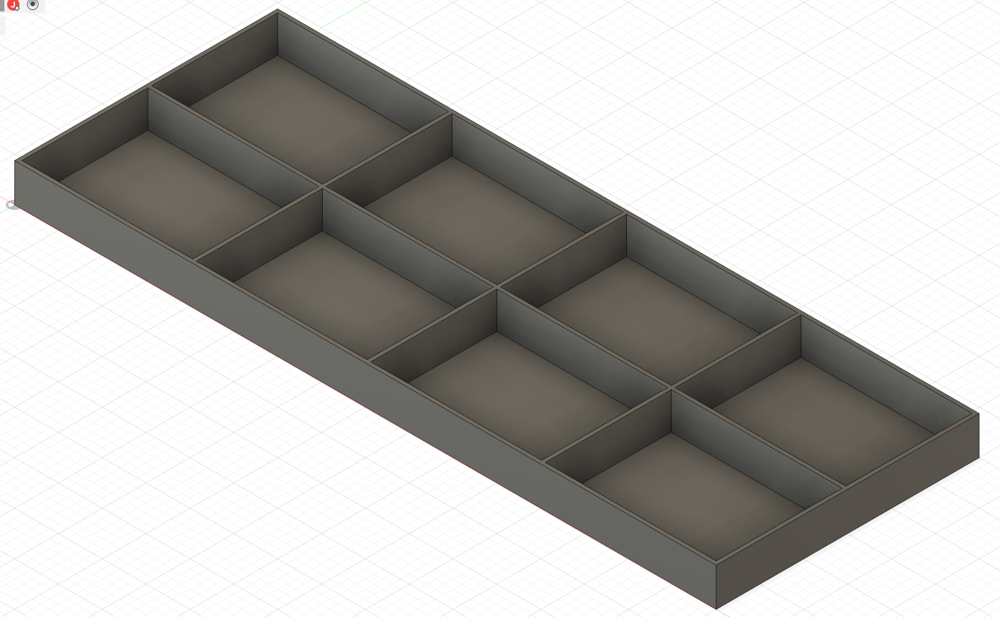
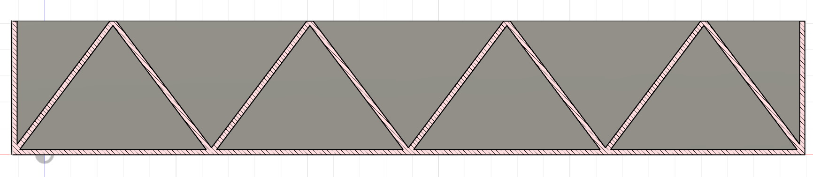
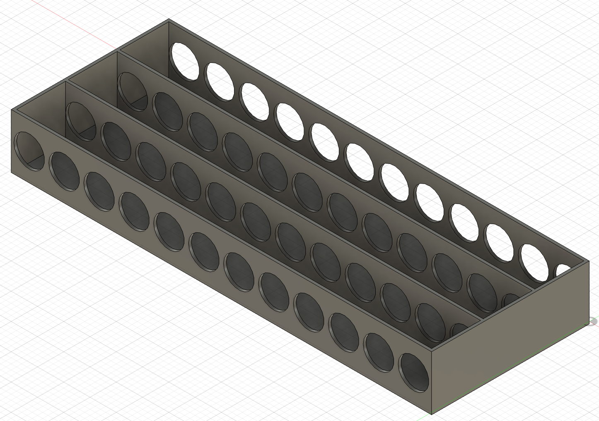
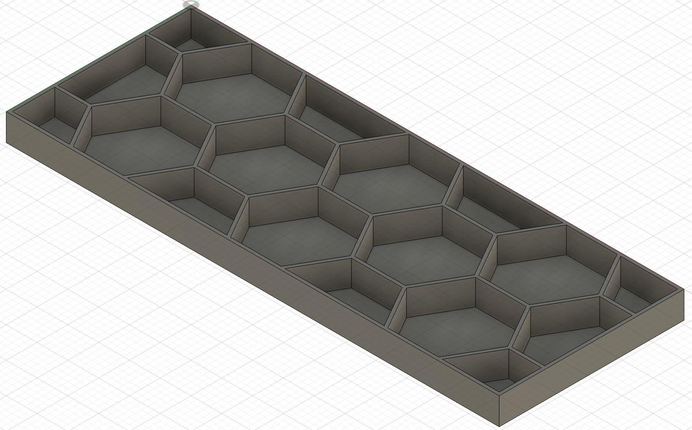
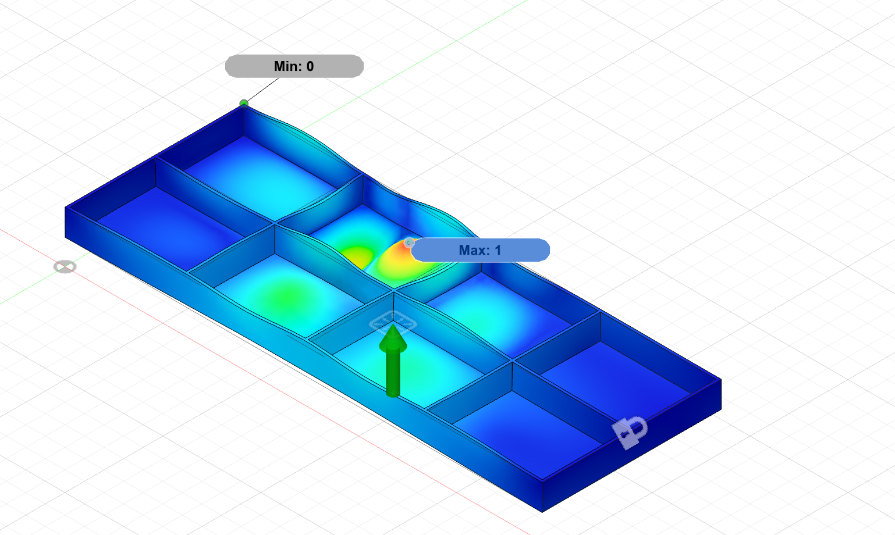
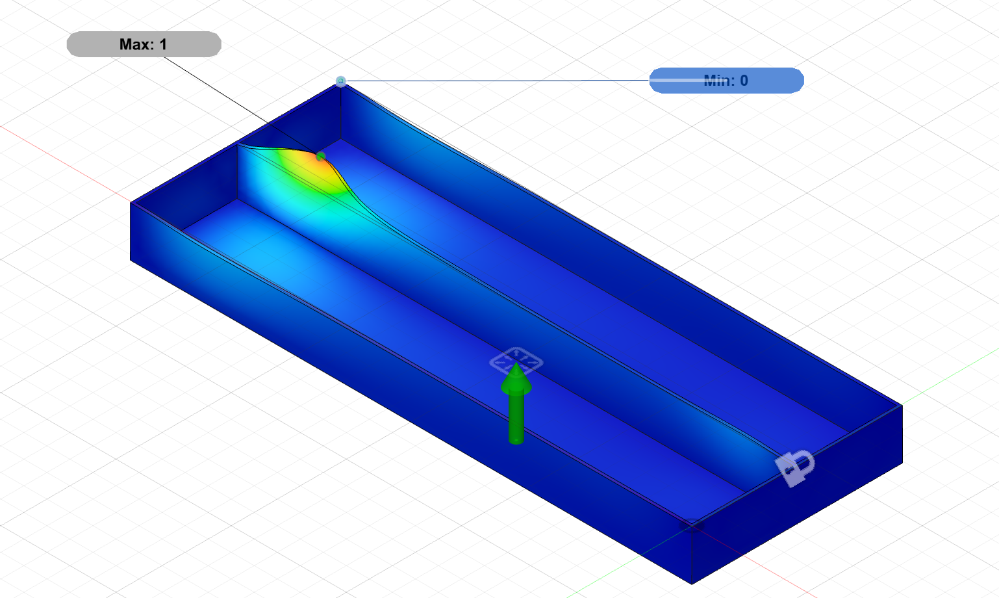
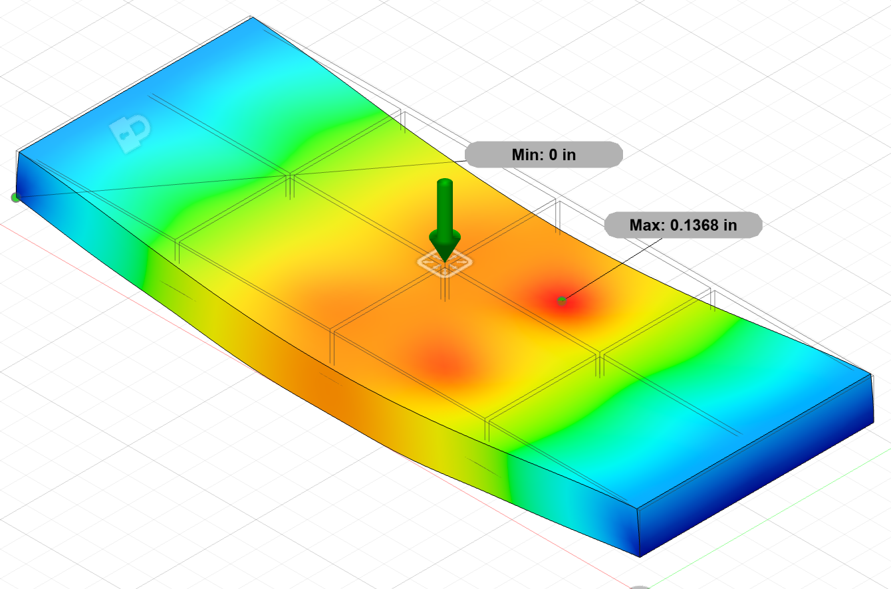
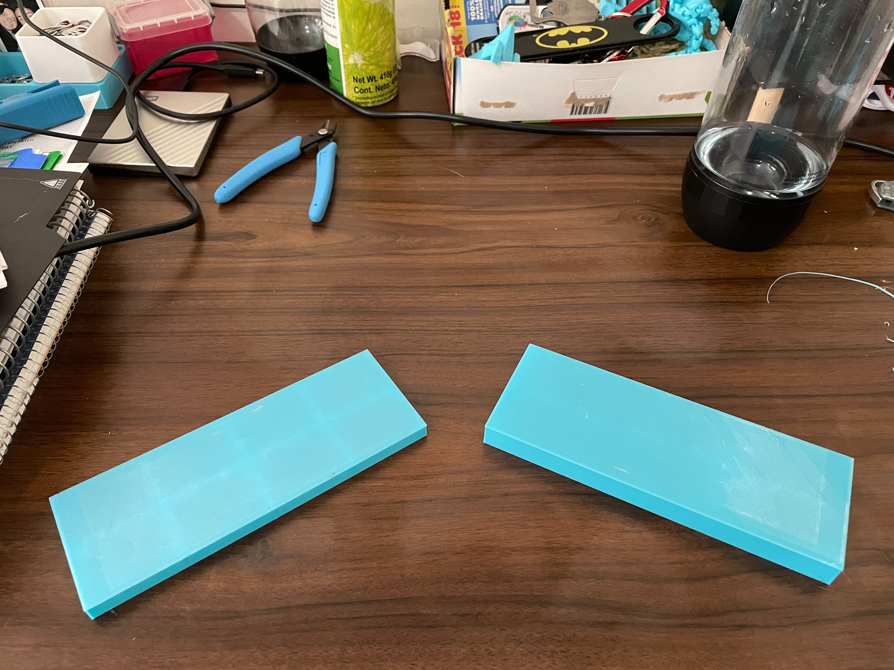

Limit floor deflection under live and dead loading to the project’s HUD-derived criteria.
MIT HAUS · Undergraduate Research
3D-Printed
Floor Design
Designing lightweight, printable floor structures for an additively manufactured home through rapid CAD iteration, finite-element analysis, and physical testing.

01
Project Overview
Optimize the floor before printing it at architectural scale.
MIT HAUS was developing a sustainable, affordable 3D-printed home. Our design-build subteam focused on a floor system that could satisfy structural requirements while minimizing material and print time.
My primary role was generating floor concepts and running Fusion 360 finite-element analyses. I iterated the internal structure, compared stiffness and weight, and used the models to guide which geometries should move forward to physical printing and testing.
02
Design Requirements
Structural performance was only one constraint.
Reduce structural mass so the house consumes less printed material.
Avoid unnecessary geometry that adds toolpath length and manufacturing time.
Respect overhang limits and maintain a practical, continuous extrusion toolpath.
Deflection criterion used by the teamL / 360
For the 8 ft span, the corresponding allowable mid-span deflection was 0.267 in.
03
Design Iteration
Change one structural idea, analyze it, then compare.
The exploration began with conventional joist-like layouts and expanded into crossbeams, truss-inspired walls, material-removal concepts, and cellular reinforcement. Joist height, floor thickness, joist count, and crossbeam count were also varied parametrically.





04
Finite-Element Analysis
Use simulation to narrow the design space.
I used Fusion 360 FEA to compare candidate geometries before committing them to print.
The full-scale setup constrained the floor at its far bottom edges and applied a distributed 40 psf load. Additional simulations reproduced the lab-scale three-point-bending setup so predicted displacement could be compared with Instron measurements.
40 psfDistributed FEA load
11.58 NScaled live-load test
0.267 inFull-scale deflection limit



05
Physical Validation
Simulation was useful—but the printed parts had the final say.

The lab-scale floors measured 3.75 × 10 in. Three-point bending was used to represent live loading, with displacement recorded at the scaled 11.58 N load. Models were also loaded toward failure to understand margin beyond the service-load condition.
ModelPhysical deflection
v1.30.24 mm
v1.120.34 mm
Project limit0.706 mm
The physical and FEA trends were similar, but the values did not yet match closely enough to treat the simulation as fully calibrated. The team identified printed-material properties—especially Young’s modulus—as an important next step.
06
Outcome
A design direction backed by both simulation and testing.
With the current physical-test results, version 1.3 emerged as the strongest candidate to continue developing.
It combined low measured deflection with manageable weight and print complexity. More importantly, the project established a repeatable workflow for screening future floor concepts computationally and then checking the assumptions against printed hardware.
Selected physical-test candidatev1.3
0.24 mm measured deflection at the scaled service load.
Engineering Takeaways
Optimization only works when the model and manufacturing process agree.
Design for the process
A structurally attractive geometry is not useful if the large-format printer cannot produce its overhangs or toolpath reliably.
Use FEA comparatively
Before full material calibration, simulation was most valuable for screening concepts and understanding which variables controlled stiffness.
Validate assumptions
Printed polymer behavior, layer orientation, and process settings can shift the physical response away from idealized material properties.
Iterate with evidence
CAD, FEA, printing, and testing formed one loop rather than separate phases of the project.